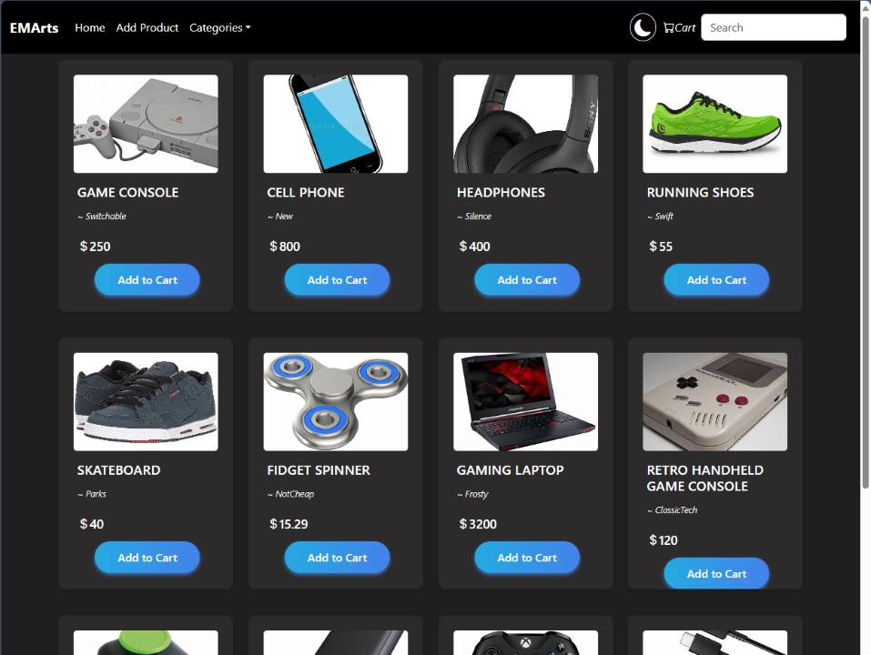
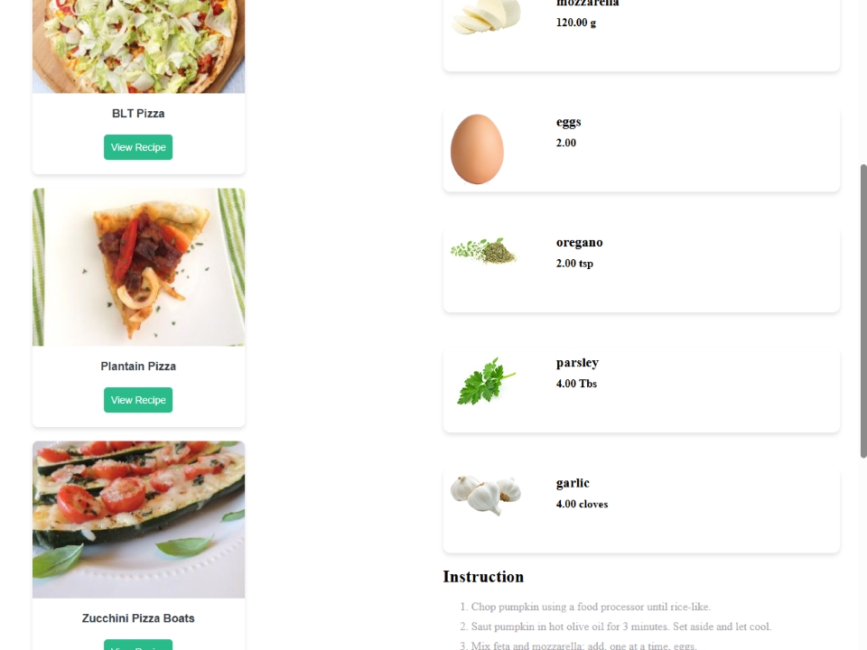
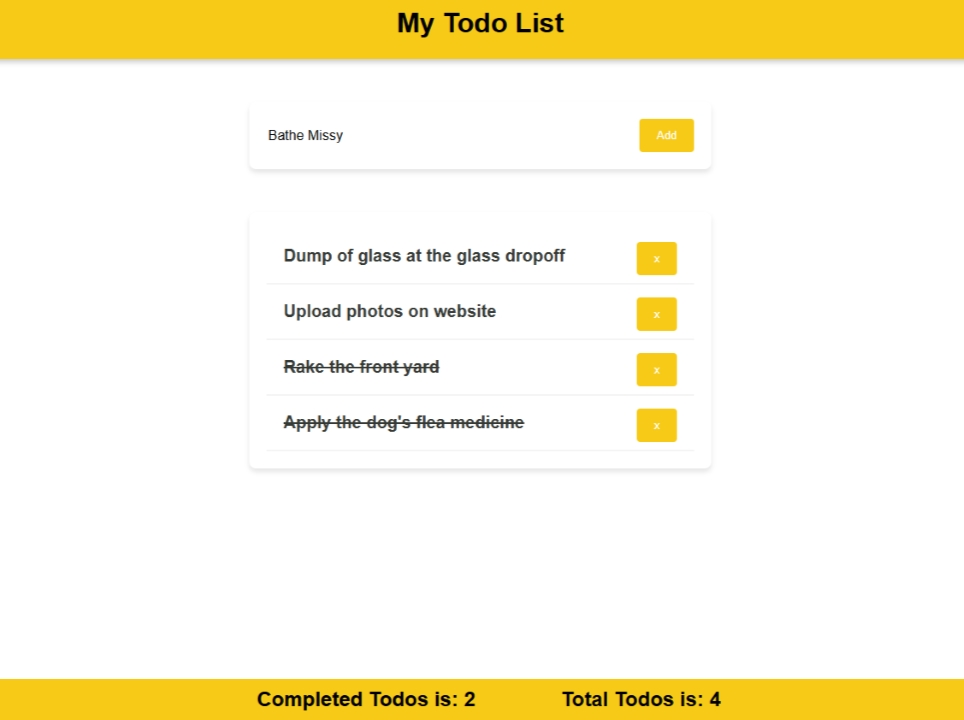
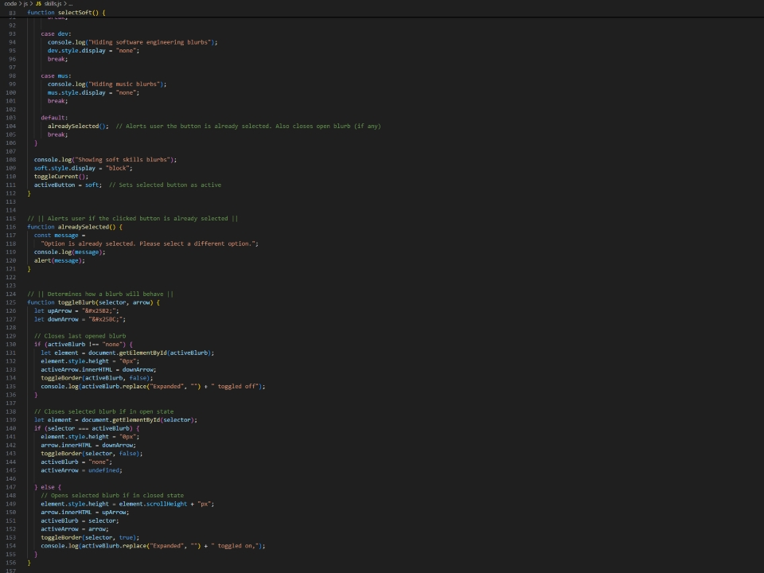
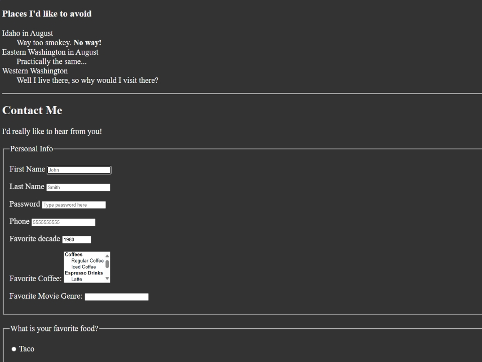
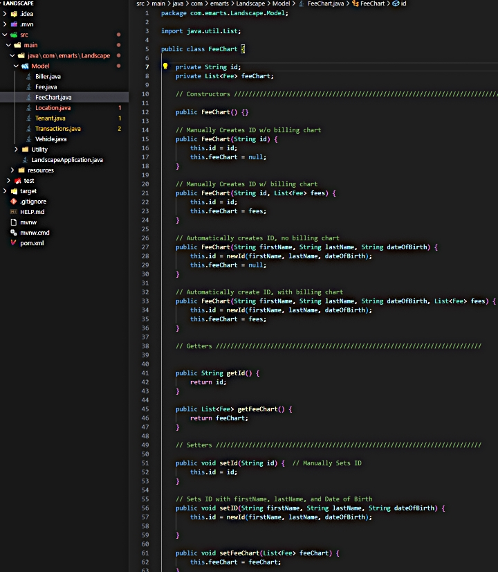

Developer Portfolio
Evan’s most sophisticated project to date is an e-commerce application, featuring both a custom front-end and back-end.
For the front-end, this project uses the React.js (JavaScript) library with Bootstrap for styling. The back-end utilizes Java’s Spring Boot framework. This includes Spring Web, JPA w/ MySQL, Security (JWT & basic authorization), and Lombok.
Evan built the entire back-end and edited/bug-fixed the front-end. You can find the code for the project on GitHub.
E-commerce Application
The home page for the e-store application.
Recipe Search App
The main page for the recipe search application.
Evan’s first practical project to be completed using the React.js framework was a recipe search application.
The application features a search function that utilizes the Spoonacular API to locate recipes based on keywords that, when selected, will fetch recipe instructions and ingredients, as well as pictures of ingredients and the completed dish.
You can find this recipe application along with its code on GitHub.
After getting comfortable with HTML CSS, and JavaScript, Evan wanted to learn one of the popular front-end libraries.
This todo application is Evan’s first completed project that uses React. He learned how to build a new project using the Node.js package manager (npm), how to create, use, and reuse components in a dynamic environment, and how to apply CSS stylings in a React environment.
More about this project can be found on Github.
Todo App Project
A screenshot of the todo app made by Evan
Personal Website
Some of the code for this website.
This Website is Evan’s first practical solo project to be fully completed. It features a personally designed and fully featured front-end user experience, including animations, menus, synchronous & asynchronous functions, and other dynamic features.
Evan created this website using pure HTML, CSS and JavaScript without the use of any frameworks.
This website serves as Evan’s personal online portfolio for both music and software engineering and will continue to provide this function for the foreseeable future. It also serves as an opportunity to gain future experience by studying, maintaining and updating old code when necessary.
This was Evan’s first website, intended as a learning opportunity. Built purely from HTML, he learned the fundamentals of HTML through hands on experience.
While learning HTML, Evan was able to implement forms, links, images, menus (drop-down, multiple choice, etc.), other file sources, and more in this website. He also learned how to write with clean semantics, utilizing all block-level elements and comments to help guide other developers.
This website attempts to make a practical implementation of nearly every feature offered in HTML.
First Website
A portion of Evan's first website written on nothing but HTML (and slight CSS).
"Landscape" Landlord Project
Portion of the database model code for Landscape's back end
“Landscape” was one of Evan’s first ideas he had for an application that he wanted to build. Evan is acting landlord of a house with several roommates and pets. He collects and handles finances, deals with repairs and maintenance, and other activities. It would be practical for him to make an application that would support his endeavors as landlord.
The project is still a work in progress. The database model was built in MySQL (more information in the next portfolio piece), and a back end was built using Java, and the Spring framework. Although this project has been temporarily sidelined in favor of working on other projects, further work on this application .
After learning about MySQL, Evan created his first personal database to help him keep track of the information of his roommates. Their names, car plates, and other pieces of information make up several tables in this MySQL database.
Evan continues to update this database as needed. A planned addition for this database is to implement a method of tracking monthly bills, past bills, and upcoming bills for the tenants.
Evan also wants to implement a similar system for tracking bills for the house, ranging from utilities to supplies. Eventually an application would be attached to this database through Java's Spring framework.
Personal Landlord MySQL Database
Tables from Evan's personal MySQL database, viewed on the Windows Command Propt